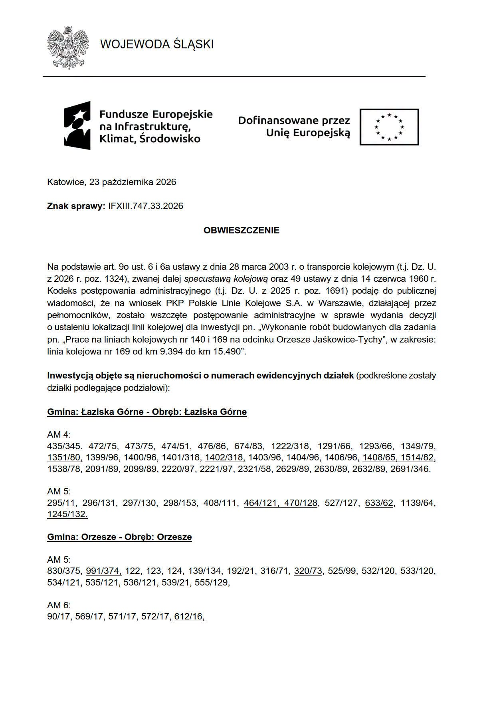
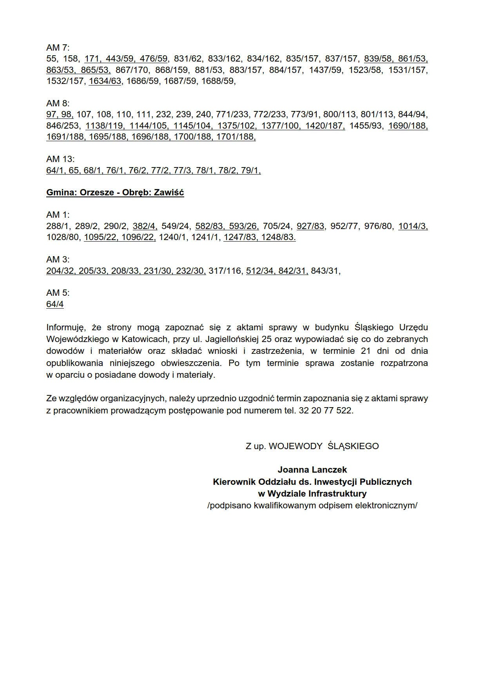
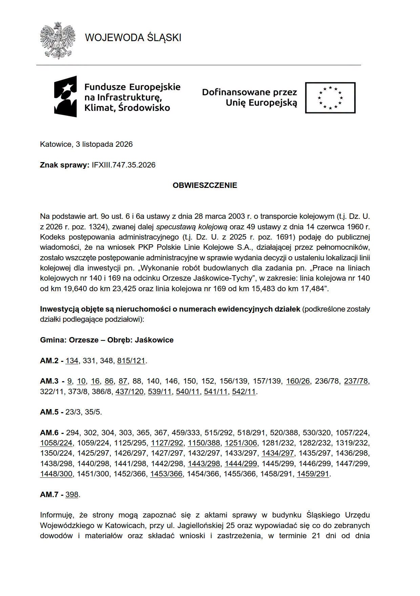

Linie kolejowe 140 i 169: działki w Orzeszu objęte inwestycją
Mapa i wykaz działek z dwóch obwieszczeń Wojewody Śląskiego o wszczęciu postępowania lokalizacyjnego dla prac na odcinku Orzesze Jaśkowice – Tychy, z orientacyjnymi adresami.
To nie jest dokument urzędowy. Zestawienie przygotowała prywatna osoba na podstawie obwieszczeń i publicznych rejestrów. Może zawierać błędy, na przykład w odczycie numerów ze skanów. Wiążące są wyłącznie obwieszczenia i akta sprawy w Śląskim Urzędzie Wojewódzkim.
Adresy są orientacyjne: przypisano je na podstawie położenia punktów adresowych z rejestru PRG (GUGiK). Obwieszczenie podaje tylko numery działek, a zestawienie nie zawiera żadnych danych o właścicielach.
O co chodzi w postępowaniu
Na wniosek PKP Polskie Linie Kolejowe S.A. Wojewoda Śląski wszczął postępowanie w sprawie wydania decyzji o ustaleniu lokalizacji linii kolejowej na podstawie tzw. specustawy kolejowej (ustawa z 28 marca 2003 r. o transporcie kolejowym, art. 9o). Inwestycja nosi nazwę „Prace na liniach kolejowych nr 140 i 169 na odcinku Orzesze Jaśkowice – Tychy”.
| Znak sprawy | Data obwieszczenia | Zakres | Obręby w Orzeszu |
|---|---|---|---|
| IFXIII.747.33.2026 | 23 października 2026 | linia 169, km 9,394–15,490 | Orzesze, Zawiść |
| IFXIII.747.35.2026 | 3 listopada 2026 | linia 140, km 19,640–23,425; linia 169, km 15,483–17,484 | Jaśkowice |
Co oznacza obecność działki na liście
- Działka leży w całości lub w części na terenie, którego dotyczy wniosek o decyzję lokalizacyjną.
- Działki podkreślone w obwieszczeniu podlegają podziałowi. Inwestycja obejmie tylko część takiej działki, a reszta zostanie wydzielona jako osobna działka. Na mapie mają przerywany obrys.
- Pozostałe działki obwieszczenie wymienia bez podziału. Wiele z nich to tereny kolejowe, drogi i lasy.
- Sama obecność adresu na liście nie oznacza, że budynek zostanie rozebrany. Co dokładnie dzieje się z konkretną działką, wynika z map i projektu w aktach sprawy.
Co można zrobić
- Zapoznać się z aktami sprawy w budynku Śląskiego Urzędu Wojewódzkiego w Katowicach, ul. Jagiellońska 25. Termin trzeba wcześniej uzgodnić z pracownikiem prowadzącym postępowanie, tel. 32 20 77 522.
- Wypowiedzieć się co do zebranych dowodów i materiałów oraz złożyć wnioski i zastrzeżenia w terminie 21 dni od dnia opublikowania obwieszczenia. Po tym terminie sprawa zostanie rozpatrzona na podstawie zebranych materiałów.
- W przypadku wątpliwości co do własnej sytuacji warto zasięgnąć porady prawnej. To zestawienie nią nie jest.
Mapa
Kliknij działkę na mapie albo wiersz w tabeli, aby zobaczyć szczegóły.
Działki z adresem
Te działki mają w granicach punkt adresowy z rejestru PRG. Każdy adres sprawdzono w geokoderze GUGiK, w ewidencji budynków i w OpenStreetMap. Dwa adresy mają rozbieżności, opisane w kolumnie „Uwagi”.
| Adres | Działka | Obręb, arkusz | Podział | Uwagi |
|---|
Wszystkie działki
Działkom bez adresu przypisano najbliższą ulicę, jeśli jej oś leży w odległości do 60 m. Ulica jest więc tylko wskazówką, gdzie szukać działki, a nie jej adresem.
| Działka | Obręb | Arkusz | Podział | Adres / najbliższa ulica | Pow. [m²] |
|---|
Dane do pobrania: CSV · GeoJSON
Skany obwieszczeń






Skąd pochodzą dane
- Numery działek odczytano ze skanów obwieszczeń, razem z informacją, które są podkreślone.
- Granice działek pobrano z usługi ULDK (Główny Urząd Geodezji i Kartografii).
- Adresy przypisano na podstawie punktów adresowych z Państwowego Rejestru Granic (PRG, GUGiK), stan z 17 listopada 2026 r.
- Adresy zweryfikowano geokoderem GUGiK, warstwą budynków ULDK i danymi OpenStreetMap.
Ograniczenia
- Budynek, którego punkt adresowy leży na sąsiedniej działce, nie pojawia się w tabeli adresów, nawet jeśli jego posesja częściowo wchodzi w zakres inwestycji.
- Działki 830/375 i 991/374 według obwieszczenia leżą na arkuszu 5 obrębu Orzesze, a według ewidencji na arkuszu 2. Przyjęto dane z ewidencji.
- Strona z obwieszczeniem IFXIII.747.35.2026 obejmuje tylko wykaz działek. Pozostałe strony tego dokumentu nie zostały tu zamieszczone.